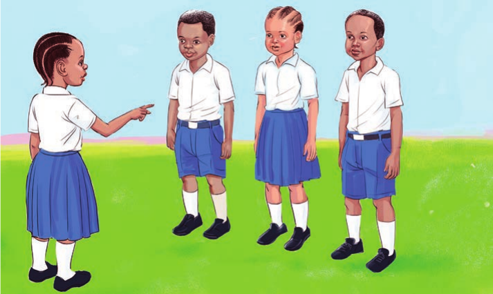
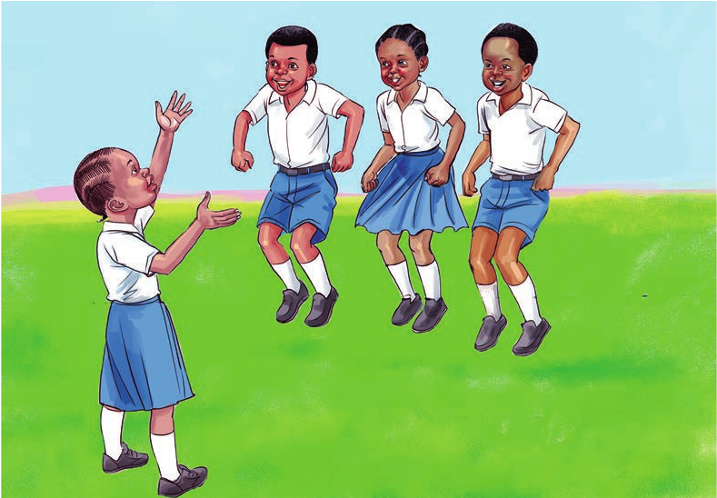
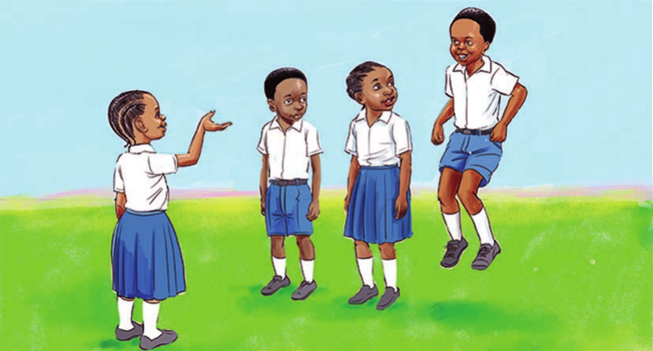
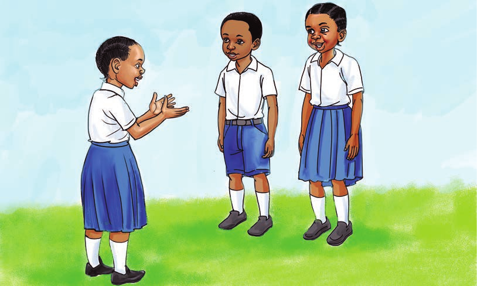
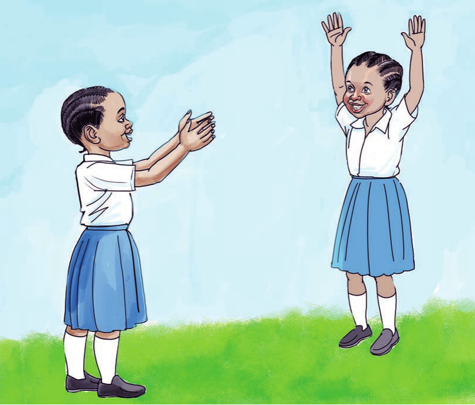

1. Jipange kwenye mstari.

Tuimbe na kucheza
Kiongozi: Nyama nyama nyama
Wote: Nyama
Kiongozi: Nyama nyama nyama
Wote: Nyama
Kiongozi: Nyama nyama nyama
Wote: Nyama
1. Jipange kwenye mstari.

2. Ruka na itikia nyama akitajwa mnyama anayeliwa.

3. Kaa kimya na usiruke akitajwa mnyama asiyeliwa. Ukitamka na kuruka utafanya kosa.

4. Ukitamka nyama, kwa mnyama asiyeliwa, utatoka nje ya mchezo.

5. Mshindi ni yule atakayebakia bila kukosea hadi mwisho.

Cheza mchezo wa nyama nyama nyama.